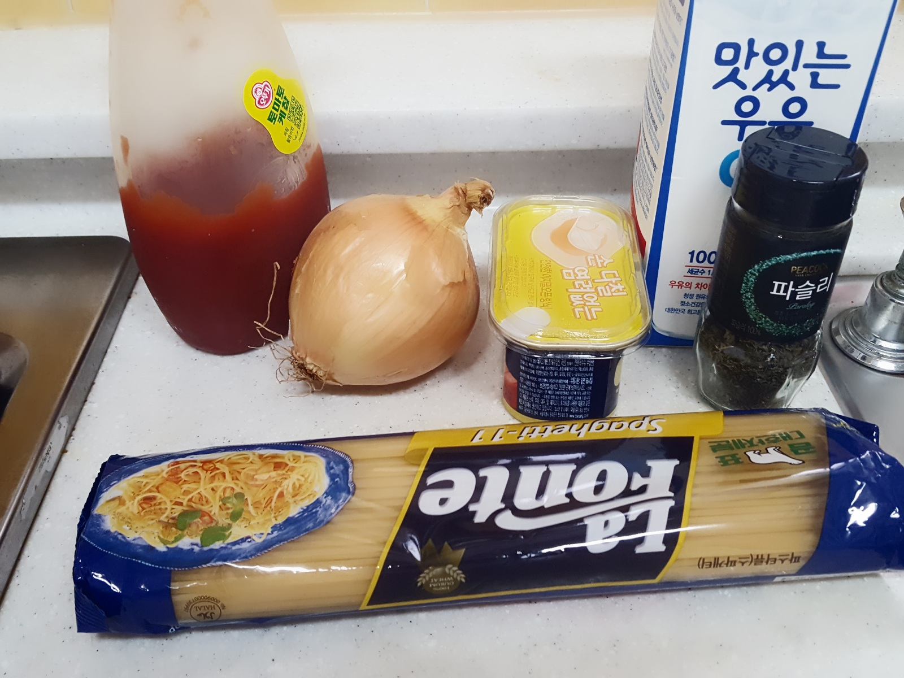
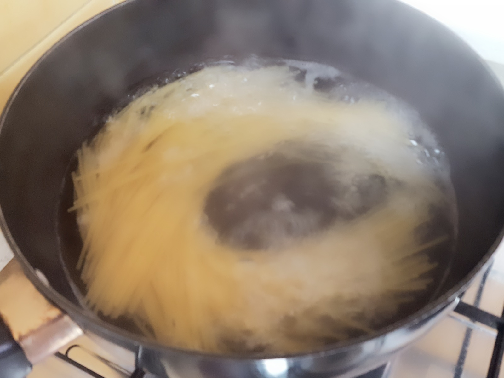
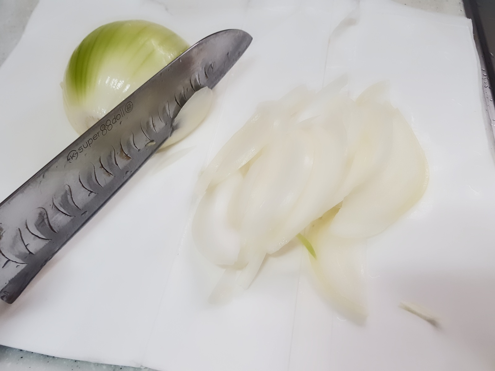
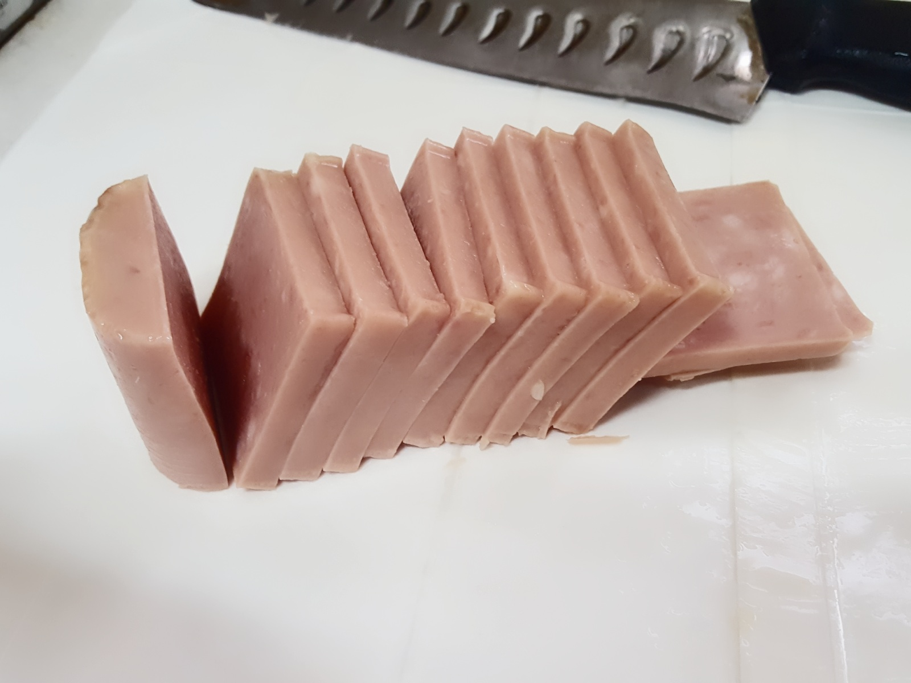
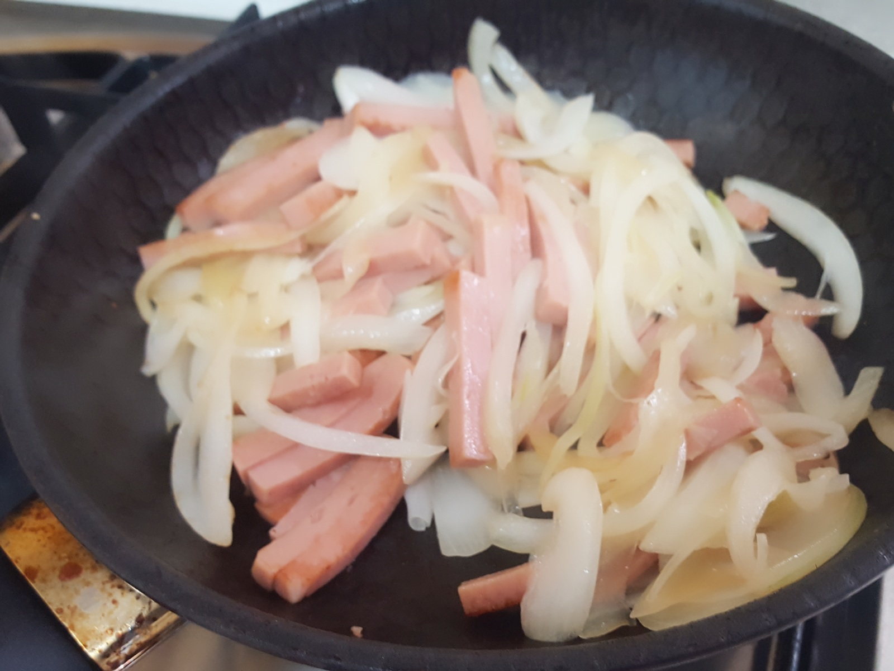
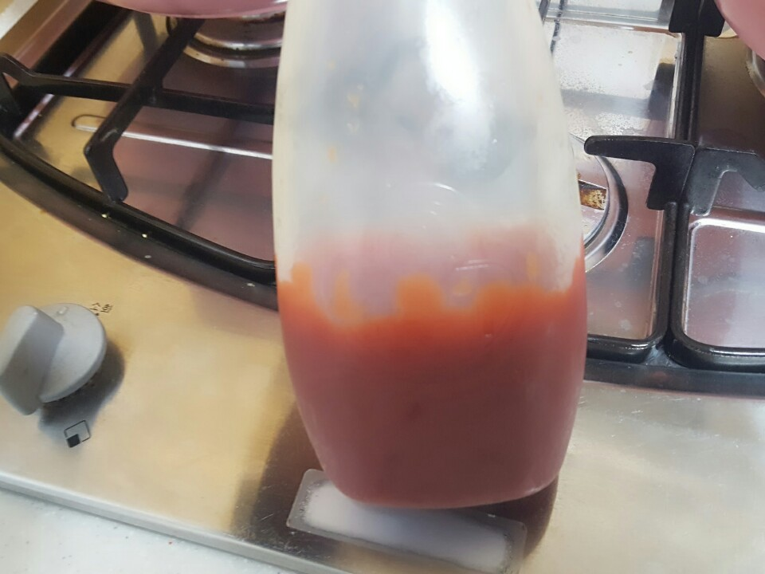
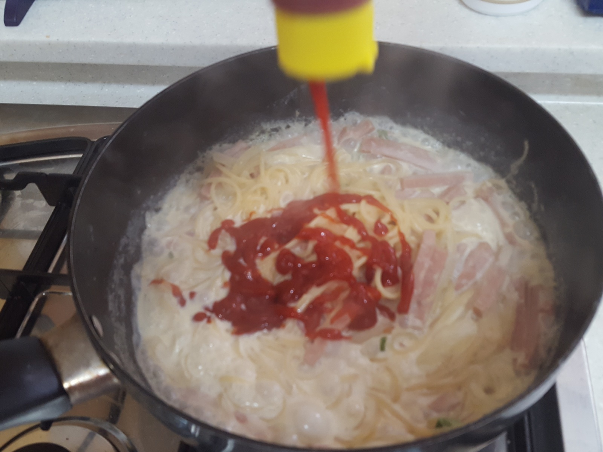
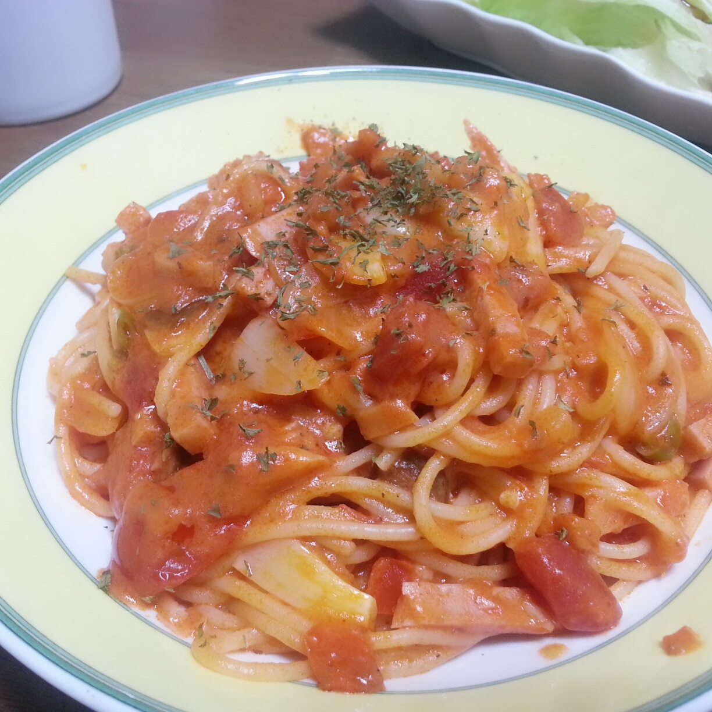

[파스타] 토마토 파스타 | Cook
고3때 친구가 놀러와, 맛난걸 해주기로 하였습니다!!
이제 샐러드는 만들었으니, 파스타를 만들어 볼까요?ㅎㅎ
... 여보세요?
... 야 크림이 좋냐, 토마토가 좋냐?
... 난 토마토
... ㅇㅋ
어디.. 한 번 토마토 파스타를 만들어볼까요?
어렵지 않아요 딱히 나가서 사온건 없어요.
그냥 집에 있는 것들 주워다가 하면 돼요~~ㅋㅋ

준비물 : 파스타 면, 케찹, 토마토(사진에 없지만) 양파, 스팸, 우유(선택), 파슬리 가루(그저 장식용)
파스타 면은 고급진건 사실 안먹어봐서 그냥 싼거.. 1~2천원 안에서 살 수 있는걸로 해요..ㅋㅋ
나중에는 막 모양 특이하게 생긴것도 사다가 해볼 생각이지만.. 그건 어디까지나 나중에..
아무튼!! 1번 포스팅에서 알려 드렸던 Tip을 참고하여..
2인분 양의 파스타 면을 준비합니다.
물은 2L 정도

물이 팔팔 끓으면 면을 넣고 약 8분~9분 간 기다려 주세요.
가끔씩 생각나면 한 번씩 저어주세요. 자기들끼리 엉켜서 눌러붙지 않게ㅠㅠ
그동안, 우린 다른 재료들을 손질해서 볶아줄까요?
이미 면을 넣었어요... 모든걸 8분 안에 끝내야 합니닷.. ㅎㄷㄷ

양파는 채썰어주시구요~~
눈이 맵다...ㅠㅠ

햄 역시 잘게 썰어주세요~!!
그냥 저대로 구워먹고 싶다... 핡...

이제 양파랑 햄을 중불에다가 볶아주세요.
양파를 볶기 전에 기름을 좀 두르고 볶으면
타지 않게 잘 볶을 수 있답니다~~
이제 볶다가.. 양파에서 물이 나올때 쯤..

가랏...!! 이젠 너의 활약이 필요해!!

사진을 못찍어서 전에 찍은 사진으로 대체 하지만.. 이렇게 케찹을 넣어줍니다.
생각보다 많은 양의 케찹이 들어가야 합니다.
그리고 토마토를 으깨서 넣어주면 좋죠.
같이 섞어주면서 뒤적 뒤적... 볶아줍니다.
그렇게 뒤적거리다가, 우유를 아주 소량 넣으면 좀 더 부드러워 집니다.
8분 30초쯤 지나면 면을 꺼내서 채에 걸러 물을 빼주...
는건 귀찮고, 그냥 물좀 따라버리고, 바로 건져서 넣읍시다.
소스의 양을 조절하고 싶으면, 케찹과 우유의 비율을 맞추어 더 넣거나, 덜 넣거나 하면 됩니다.
소스와 면이 잘 섞이도록 한 다음, 불을 꺼 줍시다~^^
우리는 많이먹는 사람들이라.. 3인분 같은 2인분을 만들었...
크흠... 파슬리 가루는 솔직히..
뭐 영양가가 있어서 아니면 맛있어서 넣는게 아니라
그저 사진찍기 위한 장식용이죠.

초간단(?) tomato pasta 완성!!
저 파슬리가루... 있는것하고 없는것하고... 사진빨이 정말 많이 달라집니다.ㅋㅋ
맛있어 보이게 사진 찍어서 자랑하면서 놀릴라고 산건 비밀..ㅋㅋㅋㅋ